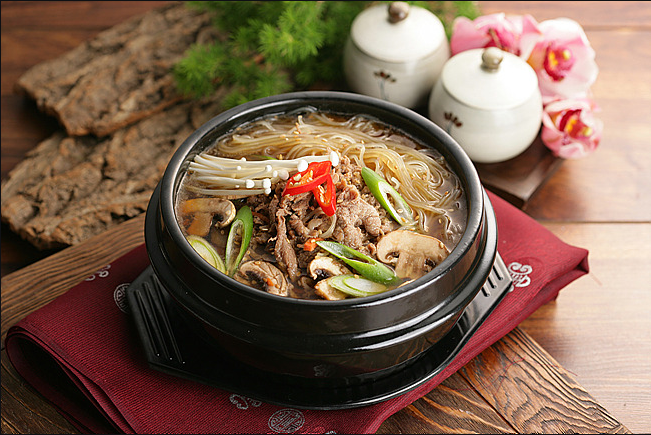

뚝배기 불고기

뚝배기불고기: 뜨끈하고 달콤한 국물이 일품인 한국 대표 음식
뚝배기불고기는 불고기를 뚝배기에 담아 끓여 먹는 한국의 대표적인
음식입니다. 일반적인 불고기와 달리 뚝배기에 담아 끓여내기 때문에 국물이
자작하게 생기고, 뜨끈하게 즐길 수 있다는 것이 특징입니다.
뚝배기불고기의 매력
달콤한 국물: 불고기 양념의 달콤함과 채소의 시원한 맛이 어우러져 깊고
진한 국물 맛을 자랑합니다.
뜨끈한 온기: 뚝배기에 담아 끓여내기 때문에 오랫동안 따뜻하게 즐길 수
있어 추운 날씨에 더욱 인기가 많습니다.
다양한 재료 조합: 불고기
외에도 양파, 버섯, 당면 등 다양한 채소를 넣어 풍성한 맛을 즐길 수
있습니다.
간편한 조리: 재료만 준비하면 누구나 쉽게 끓여 먹을 수
있는 편리한 음식입니다.
뚝배기불고기의 역사와 유래
뚝배기불고기는 불고기를 뚝배기에 담아 끓여 먹는 방식이 자연스럽게
발전하면서 생겨난 음식으로 추정됩니다. 뚝배기의 특성상 음식의 온도를
오랫동안 유지할 수 있고, 국물이 졸아들면서 더욱 깊은 맛을 내기 때문에
많은 사람들에게 사랑받는 음식이 되었습니다.